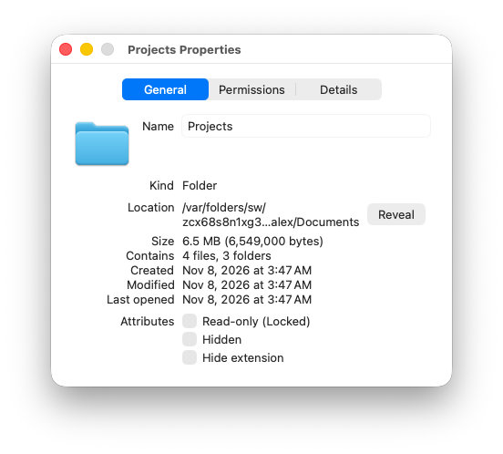
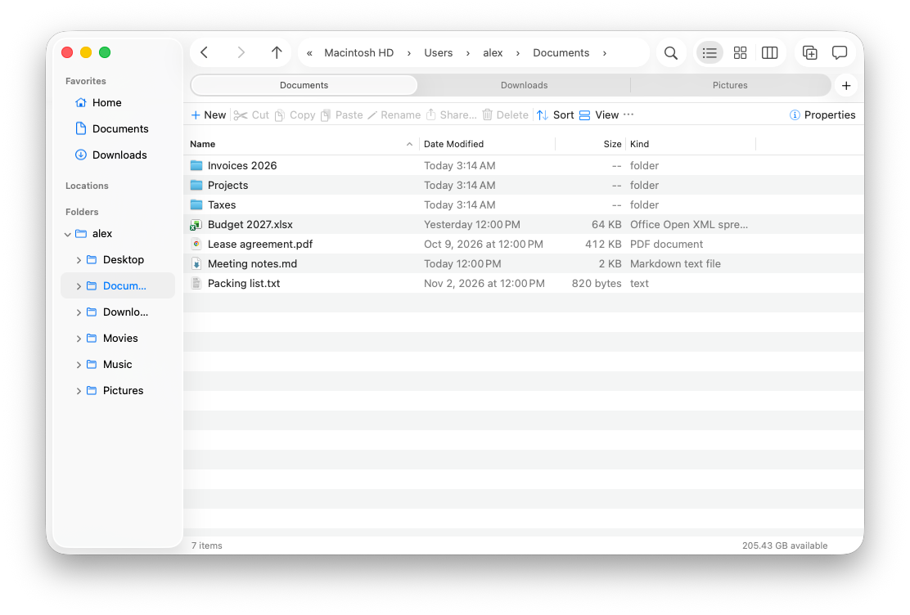

Finder, with the good parts of Explorer.
A native file manager for macOS 26. Cut and paste that moves files, an address bar you can type in, a folder tree, and folder sizes.
Free and open source. Beta.
Install
Free, MIT-licensed, and it updates itself. Needs macOS 26 Tahoe.
Homebrew
One line in Terminal.
brew install --cask roniburd/macexplorer/macexplorerSource
Build it yourself with Xcode 27 and SwiftPM.
git clone https://github.com/roniburd/macExplorer.gitMacExplorer isn't notarized yet. If macOS won't open it the first time, run
xattr -dr com.apple.quarantine /Applications/MacExplorer.app once.
Why we built it
Lots of people move between a Windows PC at work and a Mac at home, or switched after years of File Explorer. Finder does a lot well, but a few things you do every day are harder than they need to be: moving files, typing a path, seeing where you are in the tree.
We kept the Mac parts (Quick Look, tags, the sidebar, Liquid Glass, the ⌘ shortcuts) and borrowed the Explorer ideas that make those everyday jobs quicker. It's a native AppKit app, and it opens folders with 100,000 files without stalling.
Cut and paste.
⌘X a file and it greys out. Go to another folder, ⌘V, and it moves there. Esc changes your mind, ⌘Z undoes it.

Type where you want to go.
Click the address bar, or press ⌘L, and type a path. Paste one from anywhere, or start with ~.

A folder tree, and folder sizes.
The tree under the sidebar always shows where you are. Turn on View › Calculate Folder Sizes and every folder shows how much it holds.

Tabs, and a mouse that works.
⌘T for a new tab, or middle-click a folder. The back and forward buttons on your mouse go back and forward.

Downloads, sorted out.
Group any folder by date, kind, size or name. Each folder remembers its own view.

And the little things
Properties
Size, contents and permissions, one window per item.
Rename
Return opens, as in Explorer. You can switch it to rename.
Quick Look
Same as Finder, arrow keys included.
Views
Details, Icons and Columns.
Copy the path
Or as a ~ path, file URL, name, or quoted for the shell.
Undo
Every move, rename, copy and trash.
New folder
Or New ▸ Text File, right where you are.
Move to Trash
With undo.
Move here
Finder's move shortcut still works too.